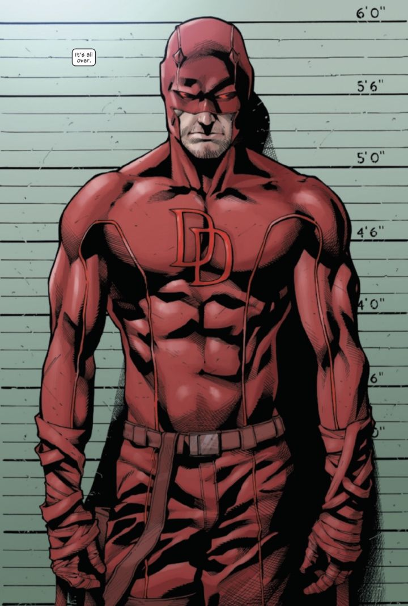
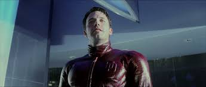
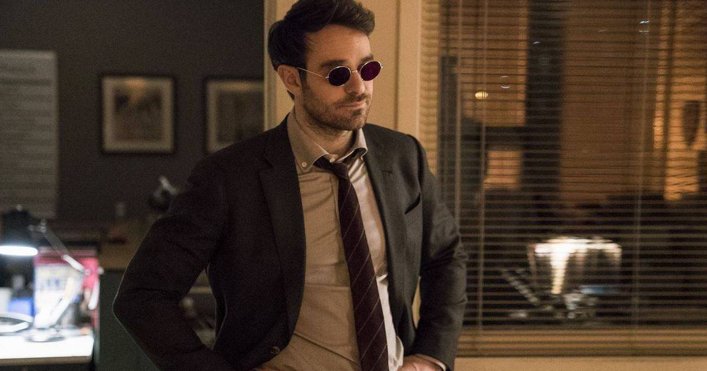
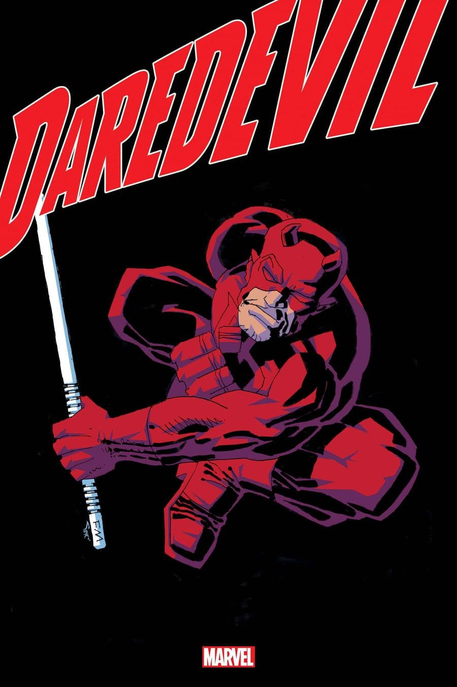

Daredevil
A história de origem do Demolidor acontece em Hell's Kitchen, um bairro de Nova Iorque, onde a criança Matthew "Matt" Murdock salva um idoso de um caminhão em andamento que continha uma carga radioativa. Como consequência do acidente, a carga começa a verter do caminhão, cegando Murdock. Apesar de Murdock nunca mais conseguir ver, a exposição à matéria radioativa melhorou todos os seus outros sentidos para além da capacidade humana e deu-lhe um tipo de sonar que atua como a sua visão.
Aparições
Enquanto Daredevil tem sido a “casa” do trabalho de vários artistas quadrinhos, como Everett, Kirby, Wally Wood, John Romita Sr. e Gene Colan, a posse influente de Frank Miller sobre o título no início da década de 1980 cimentou o personagem como uma parte popular e influente do Universo Marvel.
Mídias
Desde então, o Demolidor já tem aparecido em várias mídias incluindo séries de animação, videogames e brinquedos, e num filme Daredevil (2003), em que é interpretado por Ben Affleck.

O ator britânico Charlie Cox interpreta o homem sem medo em Marvel's Daredevil, uma série de televisão da Netflix que estreou em Abril de 2015.

Criação
Nas primeiras histórias, o personagem tinha um tom menos sombrio, similar ao do Homem-Aranha, ainda na fase escrita por Stan Lee. As histórias chegaram ficar mais sérias, sendo logo depois abandonada e retomada anos depois por Jim Shooter e consagrada na fase de Frank Miller.
